Perfil: —
Las configuraciones del vehículo se agrupan en «perfiles» — se crean y cargan desde la página Perfiles.
Tipo de vehículo
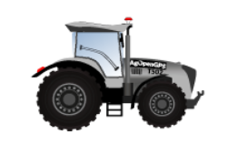
Tractor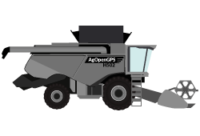
Cosechadora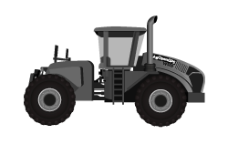
ArticuladoLa cosechadora fuerza el implemento a frontal.
Marca
Imagen
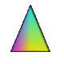
Sin imagenOpacidad del dibujo en el mapa (20–100%).
Dimensiones del vehículo

El largo de enganche no aplica con implemento fijo o frontal — se configura en la pestaña Distancias del implemento.
Posición de antena

Offset de antena
 Izquierda
Izquierda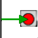
Derecha** Antena dual: la posición va a la derecha.
Estilo de enganche
 Fijo trasero
Fijo trasero Tanque intermedio (TBT)
Tanque intermedio (TBT)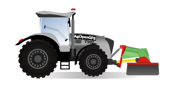
Frontal De arrastre
De arrastreLa cosechadora usa siempre implemento frontal — no hay nada que elegir.
Distancias de enganche
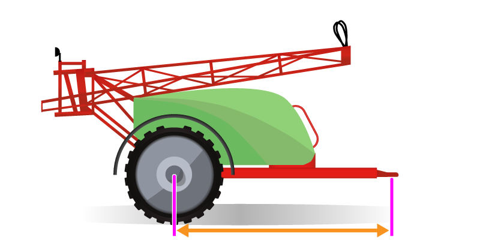
Offset del implemento
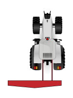
Izquierda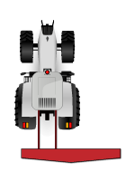
DerechaOverlap / Gap
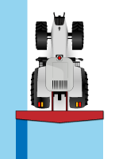
Overlap Gap
GapDistancia rueda / pivote del implemento
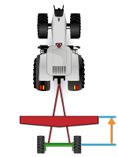
Adelante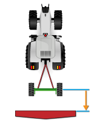
DetrásTiempos de anticipación de secciones
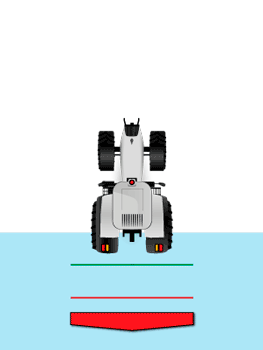
Encendido (s) Apagado (s)
Apagado (s)
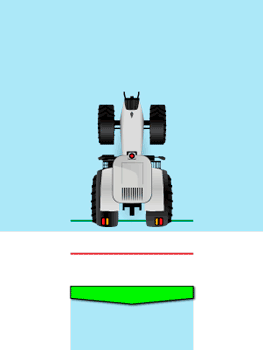
Retardo de apagado (s)«Apagado» y «Retardo» son excluyentes: al usar uno el otro vuelve a 0. El apagado no puede superar 0.8 × encendido.
Modo de secciones
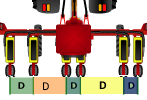
Secciones individuales
Individuales: hasta 16 secciones, cada una con su ancho.
Simétricas (zonas): hasta 64 secciones del mismo ancho,
agrupadas en 2–8 zonas.
Secciones individuales
Cambiar la cantidad pisa todos los anchos con el ancho por defecto.
Ancho total: —
Secciones simétricas
Ancho total: —
Trenes de siembra
Para máquinas con tren delantero y trasero: cada surco pertenece a un tren, y el trasero corta N metros después, sobre la misma pasada. Con un solo tren esta parte no afecta nada.
Qué surcos van en cada tren (elegí un tren y tocá los surcos):
Control de secciones
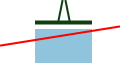
Cortar fuera del lote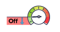
km/hSwitch de trabajo
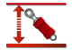
Activar Secciones: Manual
Secciones: Manual Secciones: Auto
Secciones: Auto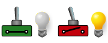
Activo con contacto cerradoSwitch de dirección
Secciones: ManualSecciones: AutoPines del módulo de máquina
Los cambios se aplican recién al tocar Enviar + Guardar — salir de la pestaña sin enviar los descarta (igual que el original).
Levante hidráulico
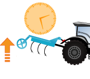
s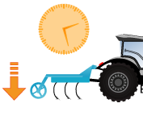
sMódulo
 Invertir relés
Invertir relés
Tipo de antena
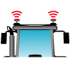
Dual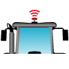
FixAntena dual
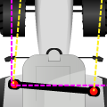
Antena simple (Fix)
Distancia de rumbo: 50 cm
Fusión: 70% IMU / 30% GPS (por defecto: 70% IMU)
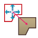
Detección de reversaAlarmas GPS
Cero de rolido
0.00
Cero actual · flechas ±0.1° · el último botón reinicia la IMU.
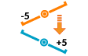
Invertir rolidoAyuda
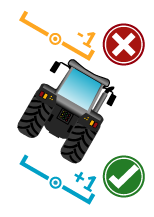
Geometría del giro
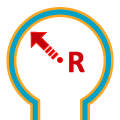
m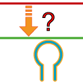
mSuavizado y extensión
Suavizado: usar 3 o 4 × radio.
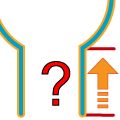
20 mExtensión: usar 2 o 3 × radio.
Trochas (tramlines)
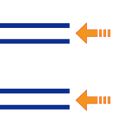
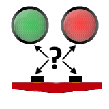
Mostrar control en pantalla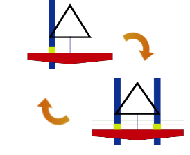
Invertir exterior / interiorElementos en pantalla
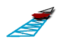
Polígonos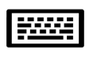
Teclado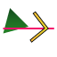
Flecha Svenn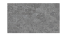
Textura de piso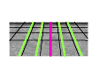
Guías extra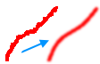
Suavizado de líneasUnidades
Cambiar las unidades guarda todo y recarga la configuración (igual que el original, que cierra la ventana).
Menú de campo
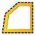
Cabeceras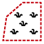
LímitesMenú de herramientas
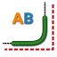
Suavizar ABMenú inferior
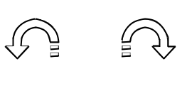
U-Turn Ajuste fino (nudge)
Ajuste fino (nudge)